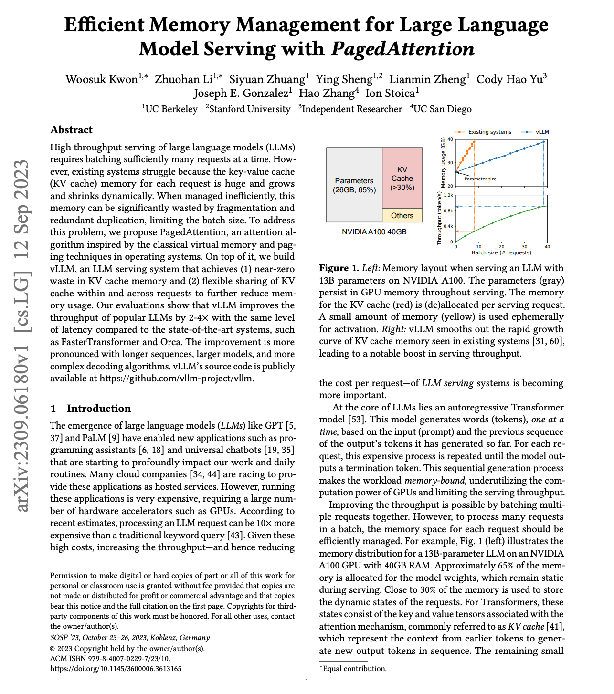

Paper notes: PagedAttention
Last weekend I studied vLLM's paper, "Efficient Memory Management for Large Language Model Serving with PagedAttention". I already knew vLLM's architecture and features from operating it, but the paper still taught me a lot — and what struck me most is that vLLM solves the throughput problem with a series of designs lifted almost directly from operating systems.
PagedAttention is virtual memory
GPU memory allocation is manual — there is no operating system managing it for you the way one manages CPU memory. So vLLM builds the missing layer itself: the KV cache is divided into virtual KV blocks and physical KV blocks, with a block table responsible for the mapping between them. In the default setting, one block holds 16 tokens.
This is virtual memory, re-implemented for the KV cache — and it solves the same two problems paging solved decades ago: internal fragmentation and external fragmentation.
Beam search as dynamic block sharing
A prompt under beam search maintains multiple candidate continuations — related to parallel sampling, but a different scenario. The beam preserves the top-k highest-probability candidates, and the sharing pattern between them evolves dynamically as decoding progresses: when a candidate's probability drops out of the top-k, its blocks are freed.
Prefix sharing and copy-on-write
During decoding, one prompt may generate multiple responses under different sampling settings, or different requests may share the same prefix — a common system prompt, for example. Since the prefix is identical, its blocks can be reused many times, and copy-on-write handles the moment the sequences diverge.
The distributed picture
The block table manages every attention page centrally, while model weights are cut by attention heads within each layer — tensor parallelism. The paper focuses on TP; pipeline parallelism is not discussed.
Scheduling and preemption
Scheduling is FCFS, to prevent starvation. Eviction is all-or-nothing: when memory runs out, a sequence group's blocks are reclaimed together rather than partially. Recovery takes one of two paths — swap the blocks out to CPU memory and bring them back later, or discard them and recompute.
The through-line of the paper is that none of these ideas are new — paging, copy-on-write, FCFS with preemption are all textbook OS material. What vLLM did was notice that the KV cache has exactly the allocation pattern operating systems spent fifty years learning to manage, and apply the known solutions.
